03 / Style study
Microsoft Art Style Index.
Compare 48 technique studies of the Matriarch of Office in one seated pose, then explore 140 compositions spanning sixty-two artistic styles. Select any image to view it full size, or open its info button to compare the study with examples from art history.
Anime cel shading
Cel-style shadows divide a form into clear bands of light and dark. Compare the jacket folds across these four portraits to see how much depth can come from a single shadow shape.

- Top left: Classic anime cel
- A few hard-edged tones explain the turn of each sleeve. Grouping the shadows keeps the pose readable at thumbnail size.
- Top right: Soft cel
- Soft transitions inside the shadow shapes round out the knees and jacket. The outline still carries the silhouette.
- Bottom left: Minimal flat cel
- With most modeling removed, the pose depends on silhouette, overlap, and the contrast between the dark suit and white seat.
- Bottom right: High contrast cel
- Large dark shapes make the small highlights count. Look where a bright edge or a break in the shadow separates one form from another.
Manga ink and screentone
Without color, line weight and value carry the likeness. Compare how each treatment separates the glasses, face, and dark suit.

- Top left: Solid blacks
- Reserve white for the lit planes and group the darks into connected shapes. The silhouette stays readable even when the portrait is small.
- Top right: Dot screentone
- A pattern of dots creates a middle gray while the inked contour stays sharp. Denser dots make a darker tone.
- Bottom left: Crosshatching
- Overlapping sets of pen strokes deepen a shadow. Follow the direction of the marks around the sleeves to see how they suggest volume.
- Bottom right: Noir lighting
- Concentrating the highlights around the face and glasses can pull attention away from a suit painted largely in black.
Watercolor
Transparent washes let the paper supply much of the light. Real watercolor spreads on damp paper and holds a firmer edge on dry paper, so moisture helps painters decide what recedes and what stays sharp.

- Top left: Loose watercolor
- The broken marks carry the gesture without tracing every contour. Compare the relatively clear face with the dissolving brushwork around the chair.
- Top right: Controlled watercolor
- Layering washes after earlier passages dry builds darker values with more control. Reserved lights help the white seat stay luminous.
- Bottom left: Ink and watercolor
- The line establishes structure, while the wash supplies color and volume. Look how the glasses remain crisp even where the shading is light.
- Bottom right: Wet-on-wet watercolor
- Color spreading into a damp wash creates diffuse boundaries. The softer shoulders and lower figure draw attention back to the clearer face.
Digital painting
Digital brushes can imitate a smooth glaze, a dry mark, or a textured surface. These variants use different combinations of edge sharpness, brush texture, and lighting.

- Top left: Soft painterly
- Gradual value changes suggest round forms. Keeping the glasses sharper than the surrounding shading gives the eye somewhere to land.
- Top right: Textured digital
- Texture can separate materials even when their colors are similar. It reads best when the broad light and dark shapes are clear underneath it.
- Bottom left: Anime influenced
- Clear outlines and simplified features hold the character design together. Selective blending adds volume to the hair and fabric.
- Bottom right: Cinematic digital
- A dominant light source gives the portrait a clear focal point. A restrained accent along the hair or shoulder helps separate it from darker shapes.
Oil painting
These digital studies emulate oil painting. Their labels describe different things: impasto is about paint thickness, alla prima about how paint is applied, and chiaroscuro about the arrangement of light and dark.

- Top left: Classical oil portrait
- Gentle changes in value and color temperature describe the planes of the face. The strongest edges are reserved for details such as the glasses.
- Top right: Impasto
- In physical impasto, paint stands above the surface and can catch light. Here the simulated ridges make the direction of the brushwork visible.
- Bottom left: Alla prima
- Working directly into paint that is still wet lets neighboring strokes mix at their edges. Look for where a single stroke suggests a fold without outlining it.
- Bottom right: Chiaroscuro
- Grouping much of the portrait into shadow gives the light shapes more weight. The face becomes the focus because it has the strongest local contrast.
Gouache
Opaque paint can cover an earlier color. Compared with the watercolor portraits, look for solid, light paint sitting over darker shapes.

- Top left: Flat color blocks
- Broad navy and cream shapes make the lapels and seat read quickly. The clean joins between shapes do much of the drawing.
- Top right: Warm and cool planes
- Distinct patches of cool blue and warm peach show changes in the direction of the surface. A shift in temperature can describe form alongside a shift in value.
- Bottom left: Limited palette
- Repeat a few mixtures across the jacket, skin, and seat to tie the image together. Look for a light stroke placed over a darker shape.
- Bottom right: Dry brush
- A brush carrying less paint can skip over the paper texture. Broken strokes make the quieter color areas feel less uniform.
Colored pencil
Pencil marks can describe both a surface and its direction. Compare visible stroke layers with dense, smoothed areas and untouched paper.

- Top left: Directional hatching
- Parallel strokes can follow the fall of the hair or the turn of a sleeve. Mark direction helps describe form before the shading gets dark.
- Top right: Crosshatched shadows
- Cross strokes build a darker value and let different hues mingle visually. Indigo and violet can deepen the suit without making it uniformly black.
- Bottom left: Burnished color
- Denser pencil layers and firmer pressure can fill the paper grain. The smoother areas read differently from visible hatch marks.
- Bottom right: Open paper
- Sparse strokes leave the paper visible through the light areas. A few concentrated marks around the glasses and lanyard establish the focal point.
Woodblock-inspired print
A small set of ink shapes has to carry the portrait. Compare which features survive when the emphasis shifts from contours to silhouettes or texture.

- Top left: Four-ink contour
- A dark contour anchors the image while broad blocks of color distinguish the suit, hair, skin, and accents.
- Top right: Two inks and paper
- Indigo and vermilion can divide the scene into cool and warm areas. The exposed paper does the work of a third value.
- Bottom left: Interlocking shapes
- Carved-looking light cuts break up dark masses. Watch how the cube and jacket meet where there is little interior detail.
- Bottom right: Graded ink
- A restrained gradient inspired by bokashi can place the figure in a softer space while the cut contours remain crisp.
Charcoal drawing
Compare this board with manga ink and screentone. Charcoal can move from a thin contour to a broad shadow with the same tool, so the edge of a shadow can carry as much information as a line.

- Top left: Line study
- Look for the few strokes that do the most work. The angle of her raised elbow and the break at the knee explain the pose before shading is added.
- Top right: Three-value block-in
- Group the portrait into light, middle, and dark masses. Squint to see whether the face, blazer, and cube still separate.
- Bottom left: Blended charcoal
- Soft transitions round out the limbs. A few sharp edges around the glasses keep the portrait from becoming uniformly soft.
- Bottom right: Charcoal on toned paper
- Let the paper serve as the middle value. Charcoal builds the dark shapes, and white chalk picks out the planes that catch the light.
Paper collage
Every visible piece of paper is a choice about shape and overlap. Look for the smallest set of pieces that still reads as the same seated character.

- Top left: Hard cut paper
- Clean cut edges make the lapels, shoes, and cube read as distinct shapes. Compare the result with the flat gouache study.
- Top right: Torn paper
- Fibrous, uneven edges soften the joins and give the clothing a textured outline. The large shapes still need to read through those irregularities.
- Bottom left: Layered textures
- Papers with different surfaces help separate the blazer, hair, and seat. Slight shadows at the overlaps make the order of the layers visible.
- Bottom right: Two-color silhouette
- Use navy for connected dark shapes and cream for the open spaces. The gap around the raised hand helps reveal the gesture with very little detail.
Soft pastel
Compare the soft edges of pastel with the firmer joins in gouache. These four studies use the same pose to show what changes when you blend pigment, leave marks separate, or let the paper show.

- Top left: Gentle blending
- Blend neighboring values to round the cheek, knees, and sleeves. Keep a few sharper edges so the pose stays clear.
- Top right: Broken color
- Place warm and cool strokes next to each other. Up close the marks stay separate, while at a distance they read as a more lively patch of color.
- Bottom left: Toned paper
- Let blue-gray paper supply the middle value. Add indigo for shadows and cream for lights, leaving some of the ground exposed.
- Bottom right: Sharp focal accents
- Keep most edges soft, then put the crispest marks around the glasses and lanyard. The change in edge sharpness helps direct the eye.
Pixel art
At small sizes, groups of pixels have to carry each shape. Look for the few marks that still read as glasses, lapels, and a raised hand.
- Top left: One-bit silhouette
- Use two values. Open gaps around the hand and glasses keep the gesture legible against the dark suit.
- Top right: Four-color portrait
- Give each palette color more than one job. A dark blue can define the contour and shade the suit, while cream can light both the face and the seat.
- Bottom left: Dithered shading
- Alternate neighboring light and dark pixels to suggest a middle tone. Compare the patterned shadows with the solid areas that keep the edges clear.
- Bottom right: Arcade sprite
- Use strong outlines, compact color clusters, and selective bright accents. Check what survives when you look at the figure from across the room.
Artistic styles
The technique studies share a seated pose. These compositions let the style shape the entire image, from the gesture and viewpoint to the way the frame is arranged.
Art Nouveau
Curves connect the figure to the ornament. In these posters, the frame, lanyard, and plants help determine where the eye travels.

- Top left: Botanical arch
- Vines and the arch frame a standing figure. Follow the curve from the ornament into the turn of her shoulders.
- Top right: Ribbon at the desk
- The lanyard becomes an S curve. It leads the eye through the desk scene and ties the working gesture to the surrounding design.
- Bottom left: Ginkgo medallion
- A circular crop gives the glasses gesture a focal point. Repeating leaf shapes link the portrait to the frame.
- Bottom right: Iris and reverse portrait
- An over-the-shoulder pose echoes the sweep of the iris stems. The asymmetrical arrangement leaves room for the eye to move.
Art Deco
Stepped shapes, symmetry, and strong diagonals organize these posters. The same character can feel commanding in a centered pose or quick and alert in profile.

- Top left: Skyscraper sunburst
- Center the standing figure on the building's vertical axis. Stepped towers and rays emphasize height and presence.
- Top right: Diagonal profile
- A compact profile holds against broad diagonal bands. The angular background adds movement while the glasses anchor the likeness.
- Bottom left: Boardroom symmetry
- A low viewpoint and repeated vertical panels give her seated pose authority. The eye follows the central axis straight to her face.
- Bottom right: Octagonal close-up
- Use a tight, angular frame and simplify the face into planes. The glasses carry the portrait even when most of the costume is out of view.
Cubism
The figure is built from overlapping planes and more than one viewpoint. Her glasses, badge, and pose give you clues for putting the portrait back together.
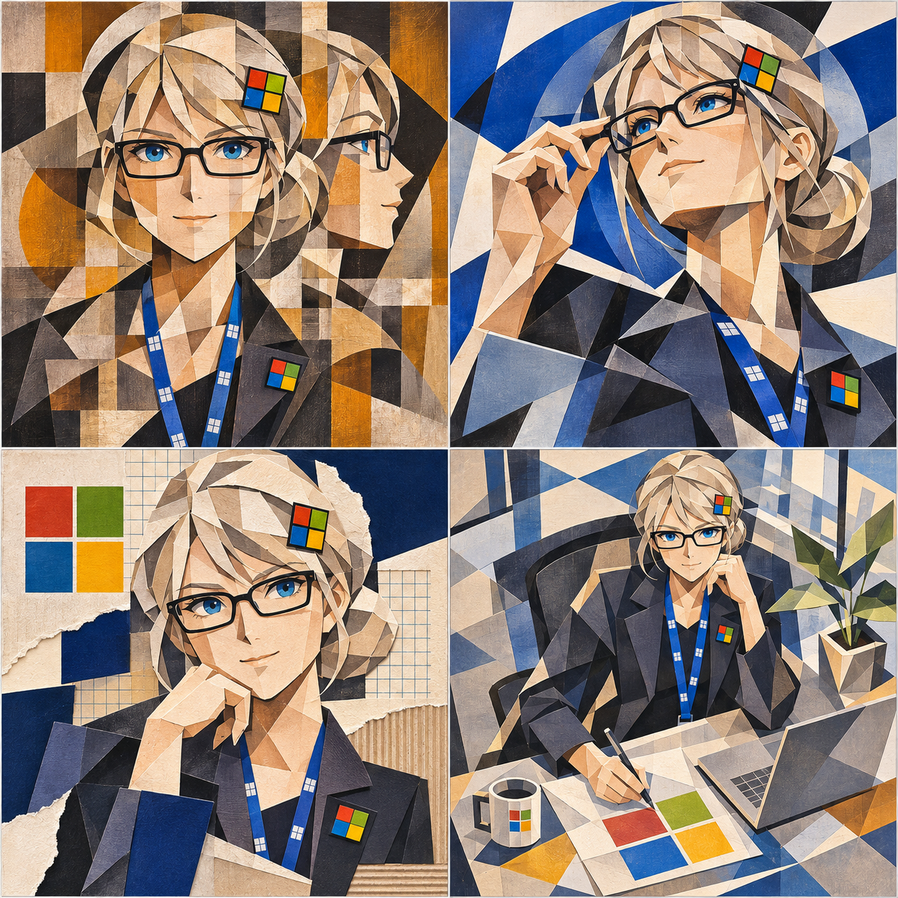
- Top left: Front and profile
- Compare the straight-on face with the overlapping profile to its right. The subdued palette helps you follow the shifts in viewpoint.
- Top right: Glasses across planes
- The frames cut across separate planes of color. Follow them through the composition to see how they hold the face together.
- Bottom left: Cut-paper construction
- A few broad pieces, a grid, and the four-square emblem suggest a whole figure. Compare this with the earlier paper collage study, which preserves the original pose.
- Bottom right: Figure and desk
- Look for surfaces seen from above alongside the figure seen from the front. The shared angles make the desk and figure part of one structure.
Pop Art
These posters borrow from comics, advertising, and commercial printing. Repetition, punchy color, and enlarged everyday objects turn the portrait into a graphic event.

- Top left: Comic close-up
- Bold ink outlines and dot patterns make the glasses adjustment read like a single beat in a comic.
- Top right: Screenprint repetition
- Colored silhouettes stack and shift. Compare edges where the colors align with edges where they separate.
- Bottom left: Badge poster
- Enlarging a familiar office badge changes the visual hierarchy. It becomes the first thing you see, with Microsoft giving it scale.
- Bottom right: Office icons
- The oversized glasses, mug, and laptop become a small visual vocabulary. Orange and blue color blocks tie the objects to the cropped portrait.
Impressionism
Light is the subject of these scenes. Compare how changes in time, weather, and reflected color alter the way Microsoft and her surroundings read.
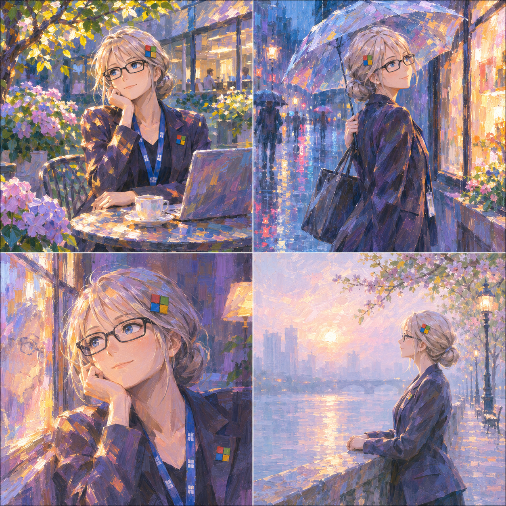
- Top left: Dappled garden
- Sunlight breaks the blazer into patches of warm light and cool shade. The scattered marks connect the figure to the garden around her.
- Top right: Rain at blue hour
- Wet pavement repeats the storefront lights. Their reflections link the foreground to the distant buildings and help the street feel deep.
- Bottom left: Window light
- Compare the warmer marks near the window with the cooler shadows on the face. The temperature shift makes the light source feel present.
- Bottom right: Riverside dawn
- Weaker contrast softens the distant skyline. The more distinct edges of the near figure make the space between her and the city feel larger.
Fauvism
Compare this board with Impressionism just above it. Here the palette sets the mood and organizes the picture, even when the colors depart from what you would see in the scene.

- Top left: Green and pink portrait
- Green and pink make the face and background feel more intense. The eyes and glasses stay legible because their value contrast holds.
- Top right: Orange office
- Broad orange shapes bind the room together. Violet and blue separate the figure and desk without relying on detailed shading.
- Bottom left: Cobalt silhouette
- A mostly unbroken cobalt shape makes the pose readable at a glance. The bright background gives that silhouette more weight.
- Bottom right: Violet and yellow window
- Strong yellow and violet carry the contrast across the window and face. Follow where the yellows repeat beyond the window.
Expressionism
The color and space follow the mood of the scene. Notice how shifting the viewpoint or exaggerating a line changes how the figure feels.
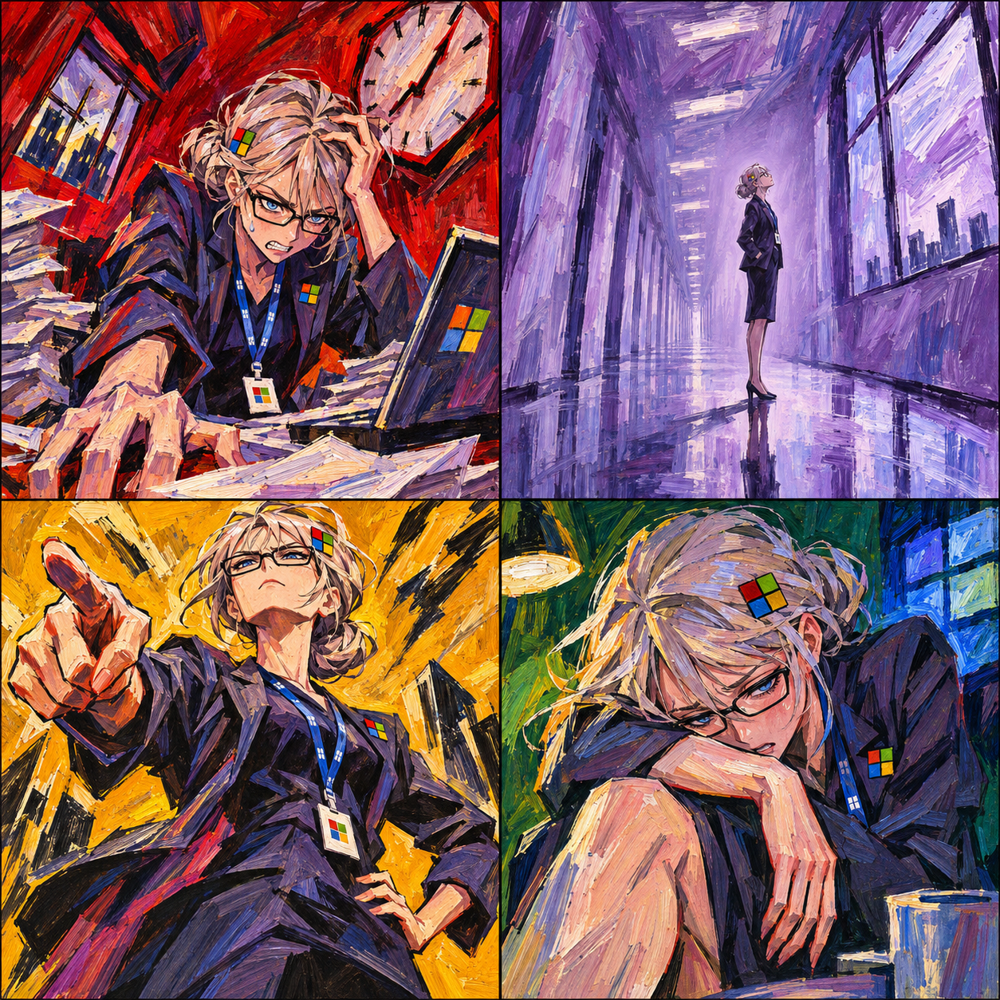
- Top left: Deadline pressure
- Lines lean inward around the desk. The crowded shapes and red surroundings make the room feel tense.
- Top right: Empty corridor
- The stretched corridor dwarfs the figure. Cool violet pushes the scene toward isolation.
- Bottom left: Defiance
- A low viewpoint and forceful diagonal strokes give the figure weight. The hand on her hip makes the gesture read quickly.
- Bottom right: End of the day
- A bent pose and abrupt framing suggest fatigue. Uneven green and blue marks carry that feeling into the space around her.
Surrealism
Familiar office objects follow the logic of a dream. Recognizable details make the impossible relationships easier to notice.

- Top left: Flooded office
- The desk floats while Microsoft stands in shallow water. The everyday office setting makes the break with gravity feel stranger.
- Top right: Two skies
- The lenses become separate windows into day and night. The glasses still frame the face, but they also break the scene into incompatible times.
- Bottom left: Desk staircase
- Desks repeat like steps and pull the eye along their edges. Perspective makes the structure readable even though it could not work as a staircase.
- Bottom right: Sea behind the wall
- An ordinary opening in a cubicle reveals an immense horizon. The change in scale does most of the work.
Constructivism
These posters use figure fragments, geometric shapes, and a tight palette as parts of a single layout. Look for the axis that organizes each composition.

- Top left: Diagonal ascent
- The figure and stair-like bars share an upward diagonal. Repetition turns a series of steps into a single strong direction.
- Top right: Profile and wedges
- A circle crops the head while wedges push against its edge. The open cream field gives the profile room to register.
- Bottom left: Desk photomontage
- Photo-like cutouts meet flat red planes. The jump between textures and scales helps the stationery compete with the figure.
- Bottom right: Modular portrait
- Rectangular blocks hold the front-facing portrait in a grid. The gaps between blocks help set its rhythm.
Baroque
The lighting and gestures stage a moment for the viewer. Follow the diagonals and look for where the brightest shapes draw attention.

- Top left: Boardroom entrance
- A shaft of light picks out the doorway and the entering figure. The surrounding dark makes the entrance feel like an event.
- Top right: Sweeping briefing
- The table draws the eye into the scene, and the gesture sends it back across the room. Highlights on the papers reinforce the motion.
- Bottom left: Candlelit briefing
- A small source of light limits what is visible. Warm reflections on the glasses bring attention to her face.
- Bottom right: Staircase portrait
- A low viewpoint makes the figure feel imposing. The railing leads the eye up toward her.
Futurism
Repetition lets successive moments occupy the same image. Compare how a raised hand, a running figure, a chair, and typing hands produce different rhythms.

- Top left: Glasses in motion
- Overlapping contours show steps in one small gesture. Follow the hand from its first position to the glasses.
- Top right: Station rush
- Repeated figures and receding platform lines point the same way. The architecture carries the motion across the picture.
- Bottom left: Spinning chair
- The chair and figure repeat around a curved path. The movement seems to turn around a point instead of traveling across the frame.
- Bottom right: Typing sequence
- Echoes of the typing hands make a fast rhythm across the keyboard. The cropped view gives the gesture most of the space.
Symbolism
The office objects suggest ideas about work and responsibility. Each image leaves room for more than one reading.

- Top left: The chain of duty
- Linked badges turn the lanyard into a metaphor. Their weight can suggest responsibility, status, or obligation.
- Top right: Procedure and instinct
- The two lenses frame an ordered grid and scattered shapes. Read them as two ways of seeing the same work.
- Bottom left: A desk in the balance
- Putting the desk on scales makes work something that can be weighed. The empty space gives the metaphor room to register.
- Bottom right: The office after hours
- The colored window gives the empty office its focal point. The small figure in the doorway makes the room feel larger than any one person.
Ukiyo-e
The woodblock board studies the look of printed ink. Here, bold crops, off-center figures, and overlapping shapes show what the composition can do.
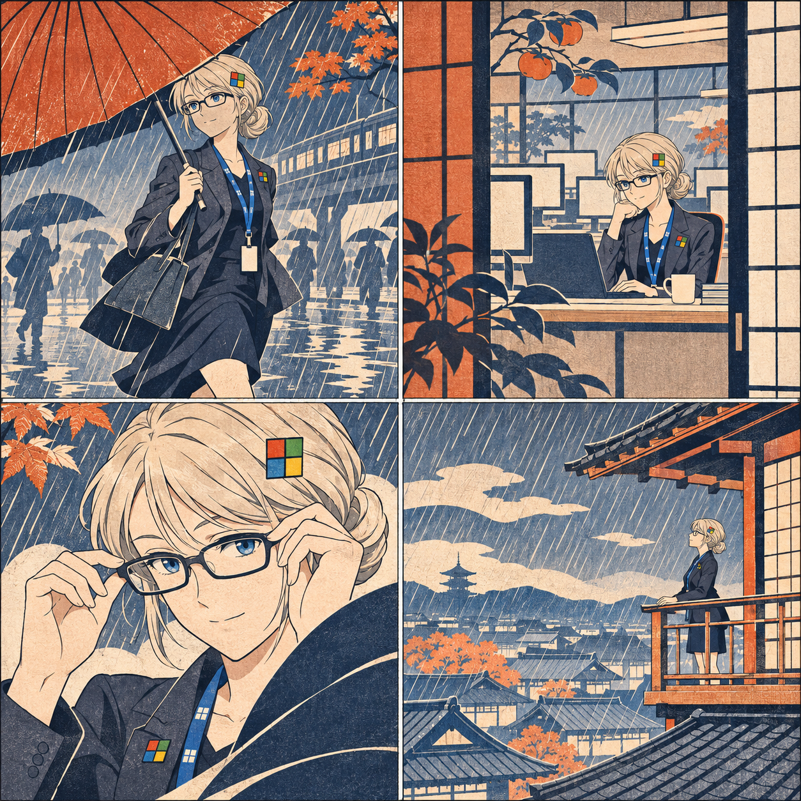
- Top left: Rainy commute
- The umbrella is cut by the frame. Slanting rain gives the street a direction, and the off-center figure leaves space for that movement.
- Top right: Through the doorway
- The near frame partly hides the office. Overlapping verticals separate the spaces without needing much shading.
- Bottom left: Hands and glasses
- The close crop makes a small gesture fill the picture. The sleeve and glasses carry the composition where a full outline would normally do the work.
- Bottom right: Balcony rooftops
- Overlapping roofs create bands of distance. The rail and figure establish the foreground, and the smaller roofs lead the eye into the city.
Neoclassicism
Compare these with the Baroque board. Level sight lines, measured poses, and architectural order give these scenes a quieter kind of authority.

- Top left: Formal address
- The central architecture and matching rows of chairs make the speaker the natural focus. Her upright gesture repeats the verticals behind her.
- Top right: Profile and column
- The profile reads against the stone through its clear contour. The column gives the head a stable vertical reference.
- Bottom left: Boardroom frieze
- The three figures read as a lateral grouping. Follow their heads and gestures from one side of the frame to the other.
- Bottom right: Portrait with ledger
- The head, arms, and ledger make a stable arrangement. The restrained gesture keeps attention on the sitter and the object she holds.
Romanticism
Weather and architecture change the scale of the story. Look at how much of each scene belongs to the surroundings and how little is needed to place Microsoft in it.

- Top left: Rooftop before the storm
- The cloud mass is much larger than the figure. Her small outline gives the approaching storm a scale the sky could not show on its own.
- Top right: Vast atrium
- Repeated arches and floor lines carry the eye away from the figure. The distant light makes the interior feel larger still.
- Bottom left: Windswept bridge
- The long span leads into the dusk sky. Small signs of wind in her hair or clothing connect her to the larger weather.
- Bottom right: Lone office window
- One warm window interrupts the dark skyline. The contrast makes a tiny figure legible and turns the city into a setting for solitude.
Op Art
Compare these with Futurism. Here the figure stays still while repeated lines, contrast, and changes in spacing make the space seem to move.

- Top left: Warped grid
- Rectangles appear to stretch where the lines bend or crowd together. The still figure gives you something to measure the distortion against.
- Top right: Vibrating stripes
- Alternating light and dark bands seem to shift against one another. The solid areas on the figure offer a place for the eye to rest.
- Bottom left: Concentric rings
- Rings draw attention toward their center near the glasses. Spacing changes affect how tightly the pattern seems to pull inward.
- Bottom right: Bending checkerboard
- Changes in tile size and direction make a flat pattern look like a surface that curves. The seated pose helps anchor the illusion.
Persian manuscript painting
Look at how walls, terraces, and textiles divide the page into places where different things can happen. The Met on architecture in Safavid paintings

- Top left: Office cutaway
- Stacked rooms let your eye move from one activity to the next. The stair landing connects the levels and gives Microsoft a clear place in the larger scene.
- Top right: Courtyard briefing
- The pool and tiled arcade divide the courtyard into zones. The figures and the architecture help establish a reading order without speech bubbles.
- Bottom left: Rooftop garden
- Layered terraces reveal parts of the garden that a ground-level view would hide. Patterns help distinguish one surface from the next.
- Bottom right: Patterned reading room
- The open ledger and the quieter shape of the figure hold their own against patterned walls and textiles. Compare where the detail is concentrated.
Byzantine-inspired mosaic
Think of each small tile as a mark. Repeated colors make larger shapes, and changes in the direction of the rows can guide the eye around a form. Byzantine tesserae at The Met

- Top left: Gold wall portrait
- Gold tiles make a luminous field around the frontal figure. Dark tiles around the glasses and jacket keep the portrait legible.
- Top right: Cobalt niche
- The arch gives the standing figure a strong outline. Dark blue and gold separate the niche from its architectural border.
- Bottom left: Floor medallion
- A circular border gives the image a center when seen from above. Broad dark and light shapes let the figure read against the surrounding paving.
- Bottom right: Face in tesserae
- Look at how the tile rows bend around the face and meet at the glasses. Their placement supplies detail where a painted portrait could use blending.
Dada photomontage
Office fragments change meaning when they are cut out, enlarged, and combined in surprising ways. Look for the visual joke each arrangement sets up. MoMA on Dada

- Top left: Calendar head
- The calendar takes the place of a face. The glasses and hair still suggest a person, while the grid makes a joke about life organized around appointments.
- Top right: Circular org chart
- Follow the arrows around the composition. The arrows loop around a cast that includes a cat, a robot, and a duck, making the chart feel like a system that explains itself.
- Bottom left: Stamp of approval
- The stamp gains power by taking up more space than Microsoft or her desk. The imbalance turns a routine approval into a visual gag.
- Bottom right: Office-scrap portrait
- Stationery and photo fragments do double duty as office objects and facial features. Compare it with the paper collage board, where the pieces mainly preserve the likeness.
Abstract Expressionism
Here Microsoft is a starting point for an abstraction. See how much the marks and color can express when the figure is reduced to a few visual cues. MoMA on Abstract Expressionism
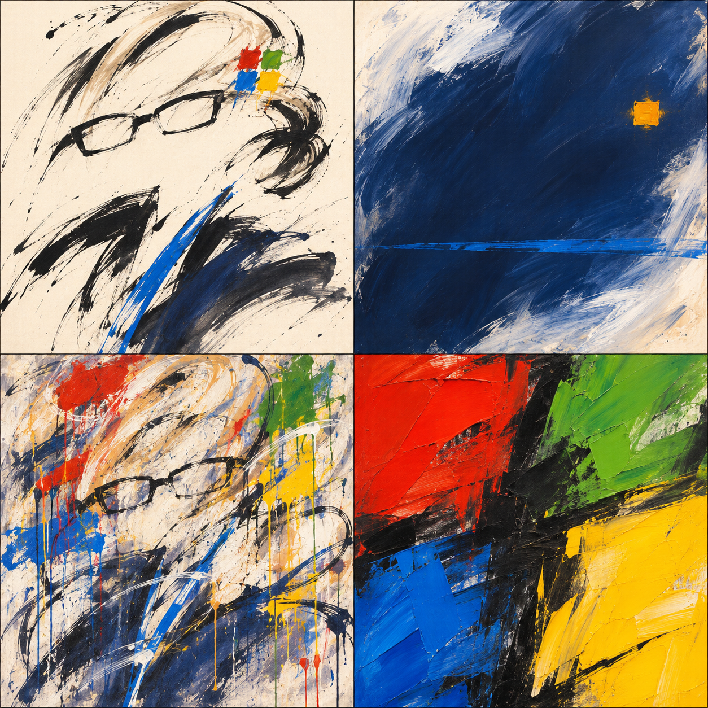
- Top left: Swept ink gesture
- A broad stroke gives the panel direction. Look for the paired marks that hint at glasses amid the faster movement.
- Top right: Navy color field
- A large area of color makes a narrow band and a small warm accent feel significant. Soft edges keep the field from reading as a flat diagram.
- Bottom left: All-over marks
- Drips and crossings spread attention across the picture. A trace of glasses can emerge briefly before your eye moves on.
- Bottom right: Four-color pressure
- The familiar four colors meet a scraped dark mass. Their spacing and size make the rectangles feel pressed together.
Chinese ink landscape
Compare these with Romanticism. Here pale ink and open paper suggest distance, while a few dark strokes establish the foreground. The Met on Chinese landscape composition
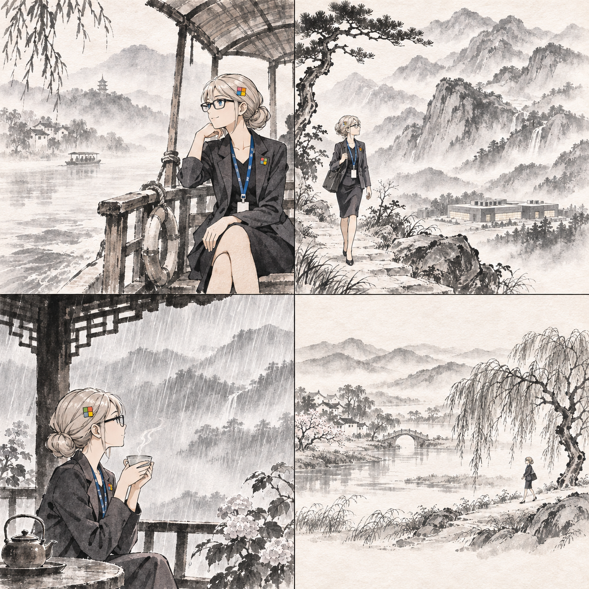
- Top left: River commute
- The ferry gives scale to an otherwise open expanse. Pale washes let the opposite bank fade into mist.
- Top right: Mountain data center
- The small building and figure tell you how tall the peaks are. Darker marks on the near path make the paler mountain layers recede.
- Bottom left: Rain from a pavilion
- The dark pavilion holds the foreground while pale slopes show through the rain. Compare the edges of the roof with those of the distant mountains.
- Bottom right: Riverside handscroll
- Follow the bank, bridge, and figure across the horizontal composition. The changing clusters of trees and open water give the eye places to pause.
Mexican muralism
These studies borrow the movement’s emphasis on public storytelling and collective work. Follow the people and the tasks that connect them across the wall. MoMA on Mexican muralism

- Top left: Building the network
- The workers, tools, and cable form a connected group. Microsoft’s plan gives her a role in the work the others are doing.
- Top right: Night-shift repair
- Arms and tools point toward the equipment. Repeated gestures make the repair visible as a shared task.
- Bottom left: Library lesson
- Books and screens create a path between the people teaching and learning. The composition lets the viewer discover more than one exchange.
- Bottom right: Four generations of work
- A shared horizontal arrangement connects the scenes. The tools change from one generation to the next, giving the wall a way to show time.
Stained glass
Compare this with Byzantine-inspired mosaic. Dark lead lines define pieces of colored glass, and transmitted light brings the larger shapes to life. The Met on leaded glass

- Top left: Backlit portrait
- The lead lines do much of the drawing. Look at where the glasses and silhouette become part of the pane pattern.
- Top right: Four-color rose window
- A repeating radial pattern pulls attention back to the center. Color separates the rings and keeps the central motif readable.
- Bottom left: Blue-and-amber stairwell
- Compare the color in the glass with the light it casts below. The stair surfaces break that light into separate shapes.
- Bottom right: Light across an empty desk
- The window is suggested through the color it projects onto the desk. The glasses and badge identify the absent sitter.
Trompe-l’œil
Each scene sets up an edge that an object appears to cross. Look at how overlap, shadows, and perspective make the object seem to occupy the viewer’s space. National Gallery of Art on trompe-l’œil
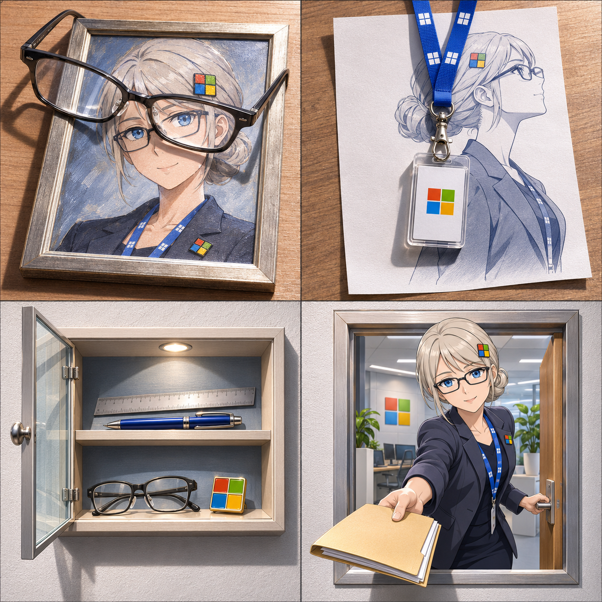
- Top left: Glasses across the frame
- The spectacles appear to sit in front of the portrait. Their overlap and small cast shadow tell you which surface is closer.
- Top right: Badge off the page
- The badge seems to hang over the illustration. Follow the shadow to see where the paper ends and the object appears to lift away.
- Bottom left: Shallow office cabinet
- The cabinet only needs a little depth for the tools to feel reachable. Edges and contact shadows explain how each object sits.
- Bottom right: Hand through the doorway
- The file and hand reach past the painted opening. The doorway gives your eye a boundary to compare with the projecting gesture.
Bauhaus graphic design
Compare the geometry with Constructivism. Here the shapes and type are arranged to tell you what to read first and what to do next. MoMA on Herbert Bayer

- Top left: Lecture poster
- The large title establishes the reading order. The gray portrait and the red circle carry different amounts of visual weight.
- Top right: Library wayfinding
- The word and arrow work together. Open space around them lets the direction register quickly.
- Bottom left: Magazine cover
- The profile crop and the title divide the space at different scales. Look at which edges line up across the two.
- Bottom right: Training poster
- The title tells you what to look for. The diagrams and the pointing gesture give you a place to begin.
Renaissance perspective
Follow the receding lines to see where the pictures direct your attention. Compare the approach with the layered rooms of the Persian manuscript board. The Met’s guide to spatial depth

- Top left: Centered boardroom
- The table, floor, and ceiling all lead toward the far end of the room. The figure gains emphasis from that shared direction.
- Top right: Off-center arcade
- The arcade recedes toward one side. Moving the focus away from the center lets the foreground figure interrupt the rhythm.
- Bottom left: Tiled office corridor
- Floor joints let you trace the depth. The repeating doors help you judge the figure’s scale at different distances.
- Bottom right: Open window
- The sill marks a near edge, and the city beyond supplies the distant lines. The window acts as a frame within the scene.
Geometry and space

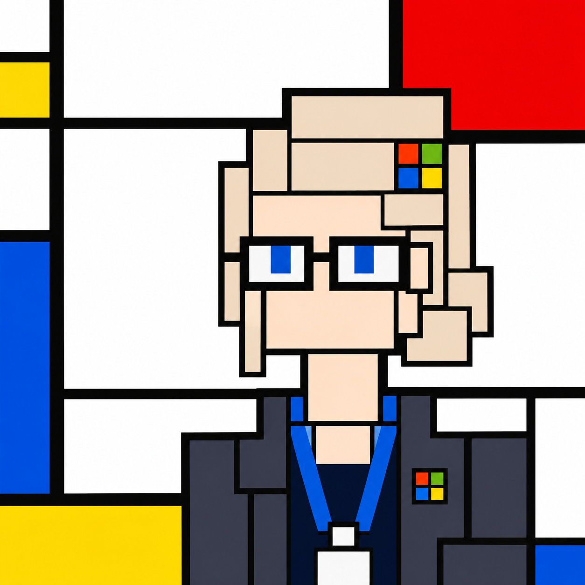
De Stijl
The grid does double duty as portrait and composition. Look for the glasses in the black bars and the clip and lanyard in the primary colors. Unequal rectangles keep the layout from feeling centered. MoMA on De Stijl

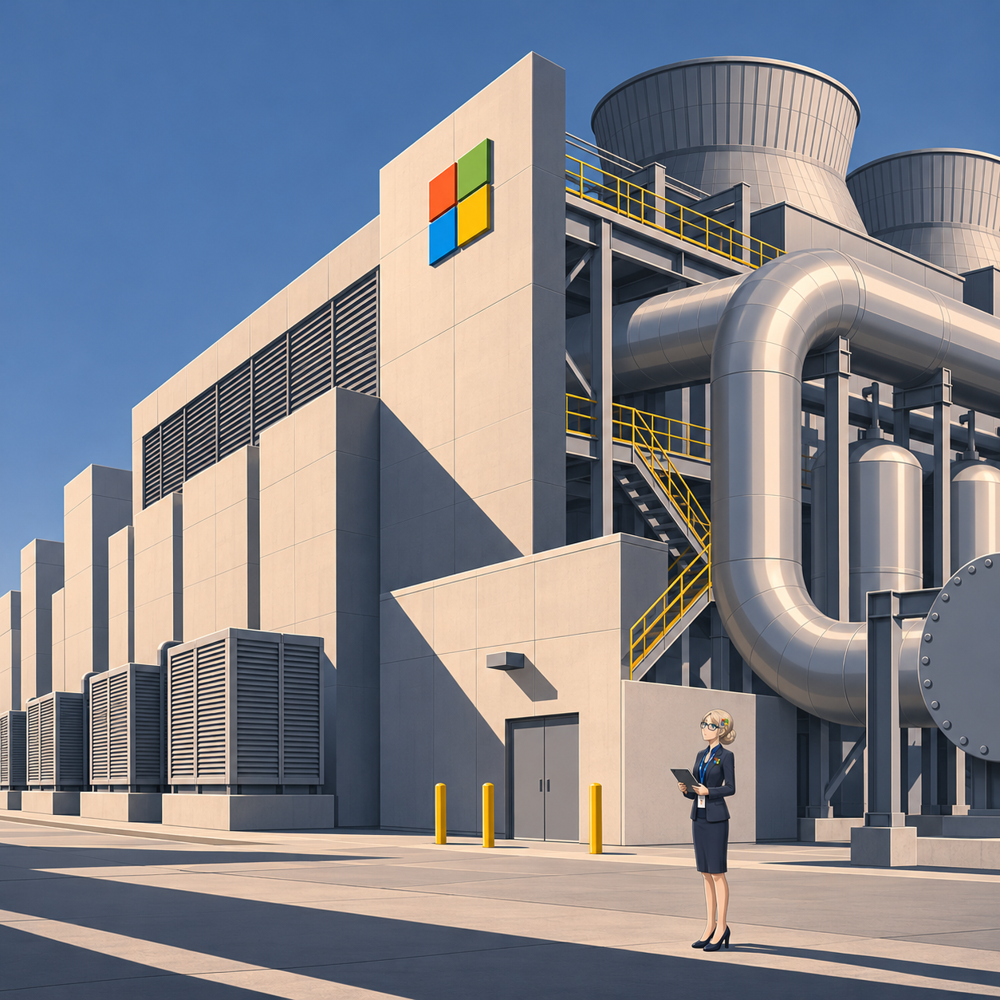
Precisionism
Follow the sharp transitions between light and shadow. The concrete facade reads as a set of broad planes, while the cooling pipes introduce a contrasting curve. Microsoft’s figure shows the scale of the machinery. Smithsonian American Art Museum on Charles Sheeler

Brutalist architecture
The heavy flights, exposed structure, and rough concrete make the stairwell feel substantial. Microsoft gives the building a sense of scale. Compare the surface texture with the smooth planes of Precisionism. MoMA on Brutalist architecture

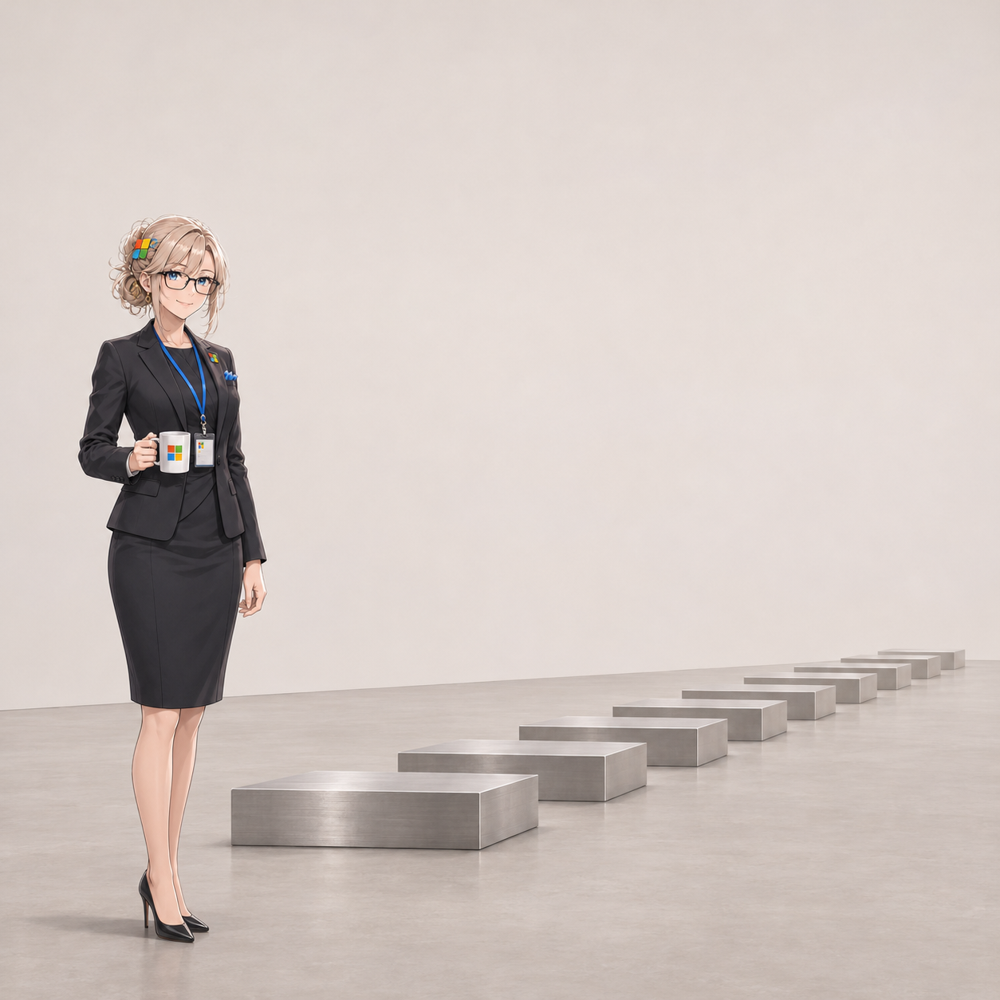
Minimalism
Follow the evenly spaced metal blocks across the floor. The broad blank wall gives the repeated forms room, and Microsoft’s figure shows their scale. MoMA on Donald Judd’s Untitled
Playful design and imagined futures

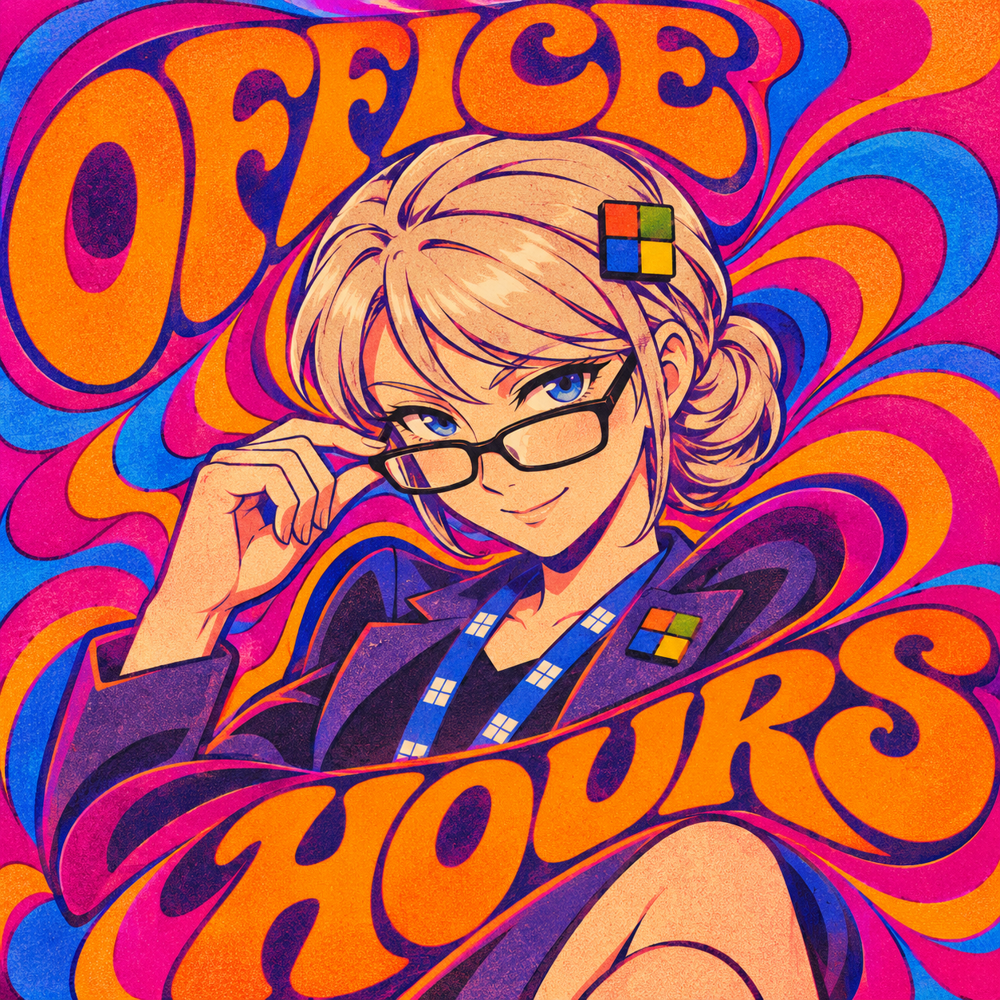
Psychedelic poster art
Compare this with the Bauhaus Office Hours poster. Here the letters bend around the portrait, and saturated colors meet along the curves to give the edges a vibrating quality. Cooper Hewitt on psychedelic posters

Memphis design
The zigzag desk and tilted lamp make the furniture the focal point. Speckled laminate and bold color blocks treat the surfaces as part of the composition. The Met on Ettore Sottsass

Afrofuturism
A Black librarian leads the planning of a public orbital library. The team, shared blueprint, and library shelves show whose knowledge and intentions shape this future. Microsoft listens alongside them. Smithsonian’s A History of Black Futures

Space Age design
The orange lamp, curved console, and dials bring the shapes of space travel into an everyday workspace. Cooper Hewitt on Space Age design
Ornament, detail, and light

Rococo
Trace the shell relief, chair back, and gilt table legs. Their curves echo one another, drawing the eye around the salon and down to the porcelain cup. The Met on French Rococo furniture

Pre-Raphaelite painting
Start with the sealed letter in Microsoft’s hand. The carefully observed plants, fabric, and fallen flower give you details to read like clues in a story. The Met on the Pre-Raphaelites

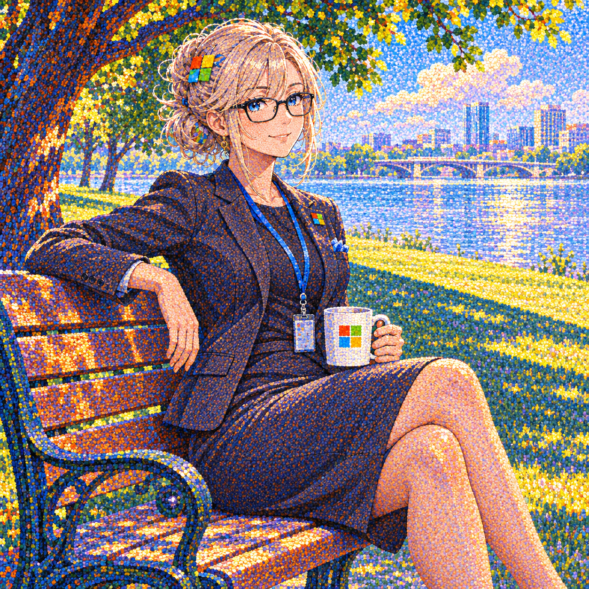
Pointillism
Open the image full size and look at the shadows. The painted dots remain distinct up close, then blend into broader color and value from farther away. Art Institute of Chicago on Pointillism

Tonalism
Follow the faint strip of sunset through the water and mist. The small shift from cool gray to warm light gives the otherwise quiet scene a focal point. Smithsonian American Art Museum on George Inness
Story, pattern, and perception

Ancient Egyptian wall painting
Read the bands from arrival to closing time. The same person appears three times so the wall can describe a whole day.

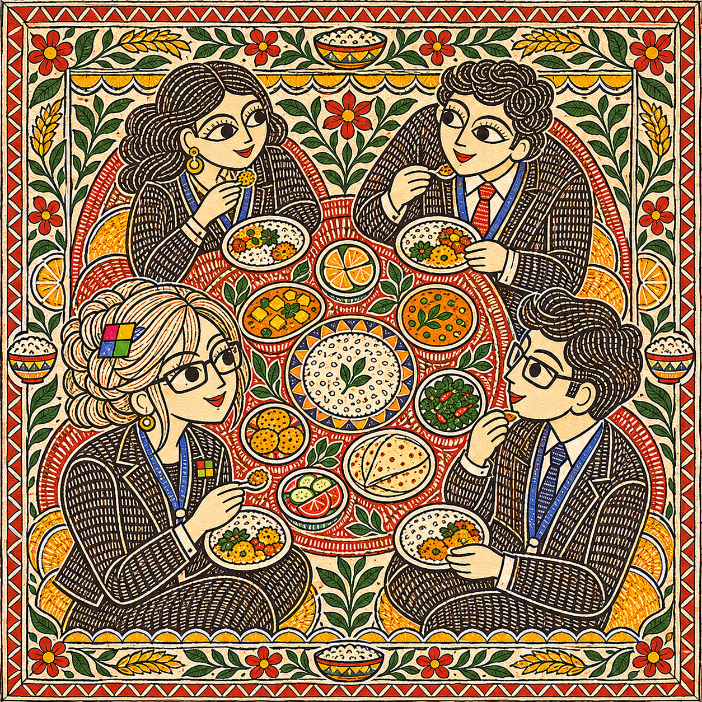
Mithila painting
Start at the shared meal, then see where the border repeats shapes from the dishes. The precise linework gives the people and the food equal attention.

Rinpa
Follow the irises along the lower edge. The open gold gives each cluster a pause and leaves room for Microsoft’s next step.

Photorealism
Look for one detail behind the glass and one reflected on it. Both occupy the same pane, so your eye has to work out where the street ends and the office begins.
How pictures carry meaning

Harlem Renaissance mural and illustration
Start at the open book, then follow the bands of light to the students and the trumpet player. Compare the profile silhouettes with the Egyptian wall-painting study.

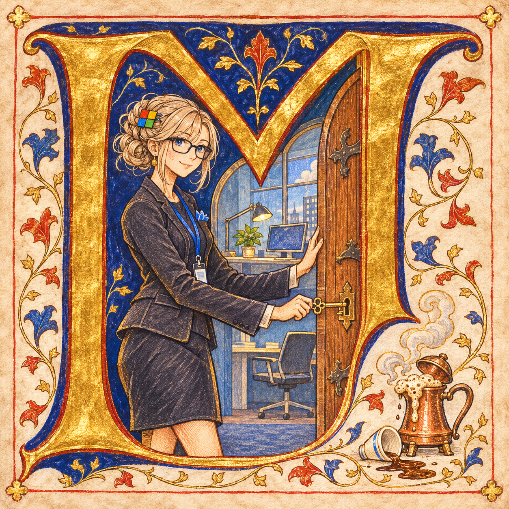
Medieval European manuscript illumination
The gold M frames the office opening. Follow the vine to the lower right to find a second event already under way.

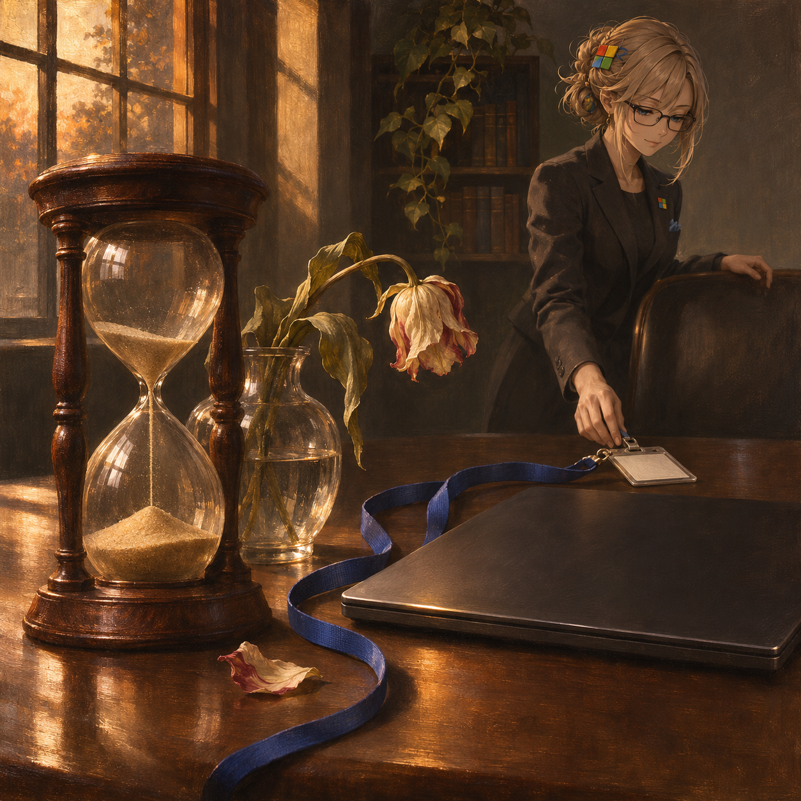
Dutch vanitas still life
Follow the hourglass, drooping flower, and closed laptop across the desk. Each gives you a different way to read the end of the day.

Kalighat painting
Look at the coworker’s deep bow, the empty chair, and Microsoft’s sideways glance. Three shapes give you the setup and the punch line.
Objects, gesture, and rhythm

Korean chaekgeori
Start with the notebook Microsoft reaches for. Then scan the compartments for objects that suggest what she studies, uses, and keeps.

New Objectivity
Read the hand propping up her head, the coffee, and the empty chair. The portrait gives you enough clues to imagine the meeting that just ended.

Wayang kulit
Follow the two arms to the folder. The punched patterns bring light through the leather, and the rods show how the figures would move.

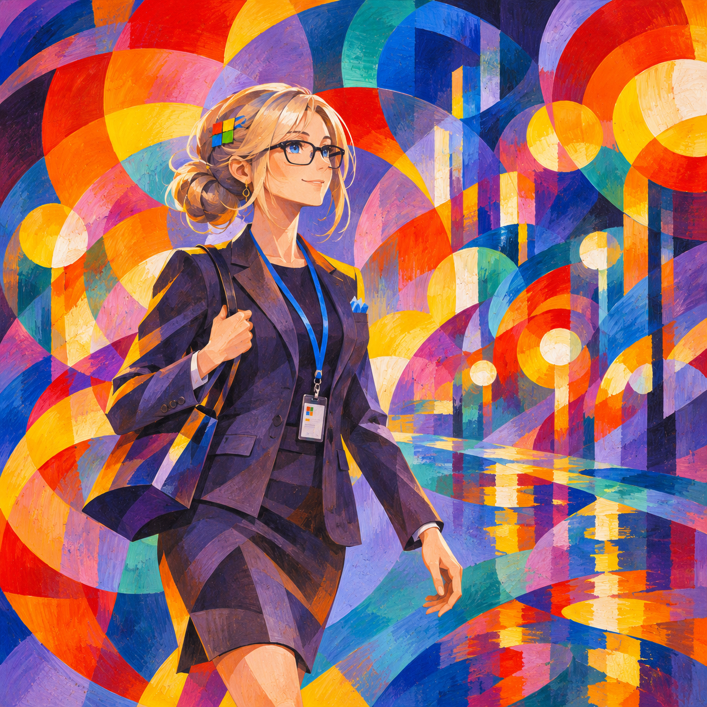
Orphism
Follow the warm circles from the street lamps into the puddles. The cool shapes between them give the bright colors a beat.
Work, craft, and spectacle

American Regionalism
The screwdriver, radio, and shop window tell you what Microsoft does. The telephone lines and small houses connect that work to a particular town.

Arts and Crafts
Trace one vine until you see where its shape repeats. Look for the same colors and plant forms in the book, cushion, and lamp.

Ballets Russes stage design
The dancers’ raised arms frame the red folder. The oversize door and the angles in their costumes help the handoff read across the stage.
Space, atmosphere, and action

Pictorialist photography
Look from the soft halo of the lamp to the faint windows across the street. Compare those dusk tones with Tonalism and the off-center framing with ukiyo-e.

Deconstructivist architecture
Set Microsoft’s upright figure against the leaning steel braces. The red handrail bends across the lobby and gives the eye a route through the competing angles.

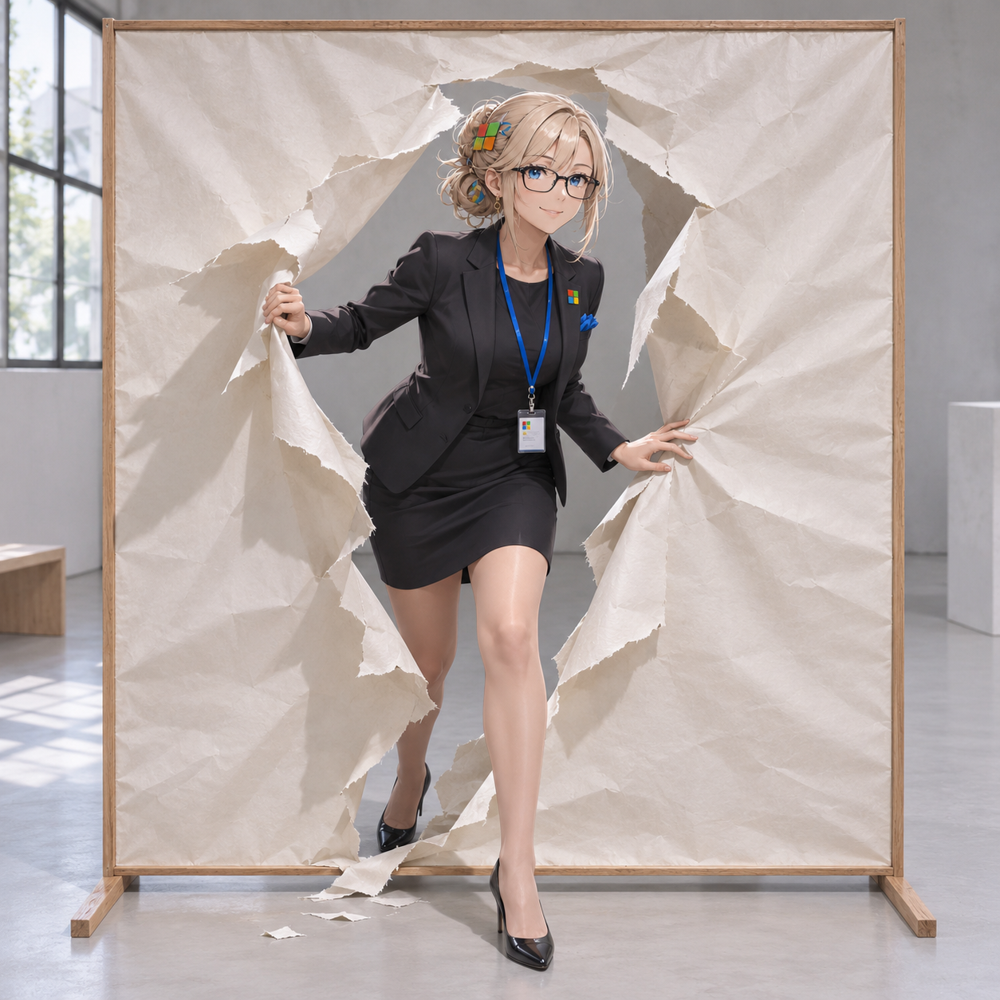
Gutai
The tears radiate from the opening, and scraps sit near her feet. Look for what the paper tells you about the movement that just happened.

Ayacucho retablo
The same computer appears on both levels. Upstairs the organizers set it up, and downstairs visitors gather around it. The painted doors frame both scenes as one event.
Art you move around

Kinetic sculpture
Find the pivot above each arm and follow what hangs from either side. The thin rods, colored shapes, and shadows would change position as the mobile turned.

Land Art
Follow the stone openings along the path. One lines up with the sunrise and leaves a warm patch on the ground. Imagine returning when the sun is higher.

Light and Space
The doorway has a firm edge. The violet glow at the far end has a much softer one. Compare how certain you are about where each surface is.

Narrative story quilts
The rooftop meal reads first. Look closer at the four corners to see Microsoft walking to work, fixing a computer, buying food, and setting a plate.
How to read the style index
Hover over or focus a study link to preview its square. Then use the examples under Art history connection to see how artists made similar choices.
How color creates atmosphere
Compare Soft pastel’s Broken color (top right), Pointillism, and Tonalism. Look closely, then step back. Where do separate marks blend in your eye? Where do closely related colors make the whole scene feel quiet? In Broken color, the warm and cool pastel strokes still show up close. Step back and they read as one lively patch. Pointillism builds the riverside scene from much smaller dots that blend at a distance. Tonalism gets its quiet from the blue-gray water, trees, and mist sitting close together in brightness and color. The narrow orange reflection stands out because so little else does.
How light tells a story
Compare Manga’s Noir lighting (bottom right) with Baroque’s Boardroom entrance (top left). Find the brightest area in each. What does it reveal, and what does the surrounding darkness leave you wondering about? In Noir lighting, small highlights pick out Microsoft’s face and glasses. The dark suit and barely visible surroundings leave you reading her expression for clues. In Boardroom entrance, the light picks out the doorway and the arriving figure. You can see that someone has entered, while the darker room leaves the reception of that arrival open.
How space changes a character’s presence
Compare Precisionism, Brutalism, and Minimalism on the Geometry and space board. When does Microsoft give you a sense of the building’s size? When do you start paying more attention to the gaps around her? In Precisionism, compare Microsoft’s height with the cooling pipes and the broad data center wall. In Brutalism, the underside of the stair and the thick concrete overhead make her feel smaller still. In Minimalism, she gives you a sense of the blocks’ size, then their regular spacing and the blank wall become the main things to notice.
How can you recognize a character with hardly any detail?
Compare Minimal flat cel (bottom left) and One-bit silhouette (top left). Look at the gap under the raised arm and the angle of the bent knee. Those shapes tell you how Microsoft is sitting before you see her face or the folds in her jacket. When a comic panel will appear small, check that you can still read the pose at that size.
How does an artist tell you where to look first?
Compare Ribbon at the desk (top right) and Lecture poster (top left). In the Art Nouveau study, the lanyard curves from Microsoft toward the desk and gives your eye a path to follow. In the Bauhaus poster, the large title catches your eye first. A curve can lead someone through a scene. A size difference can make the most important information register immediately.
What can the layout tell you before anyone speaks?
Compare Centered boardroom (top left) and Office cutaway (top left). The table and ceiling lines in the boardroom converge near the head of the table, making that seat feel important. The cutaway reveals several rooms at once, so you can see who is doing what and how they might meet. Use the first for a scene about who’s in charge and the second for a scene about how people work together.
Can a room show how someone feels?
Compare Deadline pressure (top left) and Empty corridor (top right). The leaning lines around the desk make the deadline feel as though it’s closing in. In the corridor, the space stretches away from Microsoft and makes her seem alone. You could give her the same expression in both panels and still communicate two different feelings.
How can an impossible image make an idea easier to understand?
Compare A desk in the balance (bottom left) and Desk staircase (bottom left). The desk on a scale makes you ask how much weight work should have in your life. The staircase made of desks lets you imagine climbing through one task after another. The first gives you a question to think about. The second gives you a situation you can picture being stuck in.
If you wanted this scene to feel different, what would you change first?
Soviet Socialist Realism
Look up from the cable to the pointing arm and bright windows. The scene presents labor as assured and coordinated. What parts of the job are missing from that view?